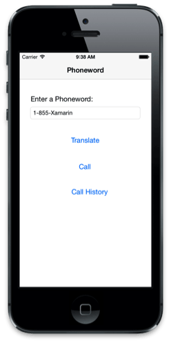
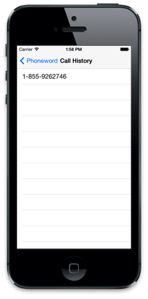
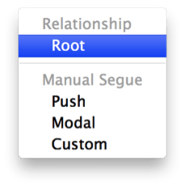

Exercise 4: Adding a second screen to Phoneword
Duration
20 minutes
Required Assets
Included with this exercise is a folder with resources that you will need in order to complete the lab. The folder name is Part 04 Resources. Make sure you have this folder before you begin. This folder also contains a starting solution with the Phoneword application + Logic if you were unable to finish the prior exercise, or want to start with a fresh project.
Lab Goals
In this lab, we will explore the Model, View, Controller (MVC) pattern and see how it is used in iOS to create multi-screened applications.
Additionally, we will introduce the UINavigationController and UITableViewController classes. We'll learn how to use these view controllers together to provide a familiar navigation experience in iOS.
Finally, we will include support for navigation between multiple screens by extending the Phoneword application we've been working on to include a second screen that contains the call history, as illustrated below:
|  |  |
Steps
Our goal is to extend the Phoneword application by adding a UINavigationController along with a new Call History screen. The UINavigationController provides a navigation bar at the top of our application with a back button for each screen except for the one at the root of the UINavigationController.
Adding a Navigation Controller
- Double-click on the
MainStoryboard.storyboardfile to open the Storyboard in the Xamarin Studio Designer. - Use the Zoom tool in the toolbar to zoom out and make room to drag in a new screen.
- Drag a Navigation Controller from the Toolbox to the designer surface and drop it into an open area.
- You can reposition the view controllers in the designer either to make room, or to keep them from overlapping, by dragging them using the solid black bar located at the bottom of each view controller on the design surface.
- Delete the Root View Controller attached to the Navigation Controller. You can do this by single-clicking on the solid black bar along the bottom of the view controller and pressing Delete. The design surface should now look like this:
- Drag the sourceless segue (it looks like an arrow pointing at your Phoneword view controller) over to the Navigation Controller. This will make the navigation controller the starting view controller. You can also change this in the property pad by clicking on the navigation controller (black bar on the bottom) and checking the Is Initial ViewController property.
- Next, let's connect the two view controllers together. Hold the Control key and click/drag from the Navigation controller to your Phoneword View controller. A light blue line will appear during the drag and once you release the mouse button, a popup menu will appear.
- Select Relationship > Root from the menu, this will make the Phoneword view controller the root view controller for the application.  The Phoneword view controller is now setup as the Root View Controller associated with the Navigation Controller. This means it is the first view controller on the Navigation Controller's stack and the Navigation Controller will automatically add a Navigation Bar to the UI. The Navigation Controller will display the screen for the Phoneword view controller as the initial screen for our app. Let's add a
- Double-click the Navigation Bar at the top of our Phoneword view controller and enter "Phoneword" as the title:
- You might notice that the view doesn't quite look right now that we have a navigation bar. The problem is that it is obscuring part of our view:
- This is an iOS7 feature, where our content is intended to slide under the navigation bar - however it's not really great for our app here. We can fix this in a couple of ways:
- Slide the content down in the designer - just click/drag the items down to make room for the bar. This will keep the same look, but just have the content lower in the view.
- Change the new iOS7 Extend Edges property on the Phoneword View controller to not slide under the top bar. This will cause the top navigation bar to darken in color as it will no longer have the white background of the view content underneath it. This is typically what older iOS6 applications did when they moved up to iOS7 so the design didn't change.
- Either approach will work - the completed lab will use #1, but you can experiement and try them both if you like.
- Once you have finished, select File > Save All.
- Run the application and make sure it displays the app properly - it should now include a title.


Title to the Navigation Bar of our Phoneword view.


Adding the Call History Screen
Now, let's extend the application by including a Call History button on the main screen that navigates to a new screen which displays the phone numbers the application has dialed. To display the calls, we will use a UITableViewController which is similar to a ListBox in Windows or ListView in Android. We won't be going into much detail about Table Views here, that will happen in another class, but we'll use one here and you will see how easy they are to use.
- Open the Mainstoryboard.storyboard design file again.
- Add a new Button into the UI just under the Call button.
- Set the
Nameof the button to "CallHistoryButton". - Set the
Titleof the button to "Call History". - Drag a Table View Controller into the design surface and position to the right of the Phoneword view controller.
Note: Make sure it's a Controller and not just a Table View - the controllers are all at the top of the Toolbox!
- Control-Drag from the Call History button to the new Table View Controller. A blue line will appear as you drag, and when you release the mouse on the second view, the navigation popup will appear. This time, select Push from the menu.
A Push Segue is used to navigate from one screen to another - in this case we will navigate to the newly created view when you tap the Call History button. Notice as well, that the navigation title now appears as well as a segue arrow connecting the two views. - Select the Table View Controller by single-clicking the black bar on the bottom of the view controller.
- In the properties, change the
Titleof the View Controller to "Call History". This will add a title to the navigation bar. You cannot double-click to change the title in this case since this is not the main view. - Once you have finished, select File > Save All.
- Run the application and tap the Call History button to navigate to the second screen. Use the Back button in the Navigation Bar to get back. All of this behavior was done through the segues in the designer.


We don't have any call data yet because we haven't wired it up - let's do that next.
Implementing the Call History Screen
We will implement the table view controller for our call history by specifying the name of the backing class in the Properties tab for the table view controller in the storyboard. Xamarin Studio will automatically generate the backing class when we change the name of the UITableViewController class the name of our custom view controller.
- Select the Table View Controller by clicking on the Black Bar of the Table View Controller and change the Class property under the Identity section - set it to
CallHistoryController. Xamarin Studio will automatically create a
Xamarin Studio will automatically create a CallHistoryController.csfile when you change the class name. This new class will be a subclass of theUITableViewControllerclass. - Open up the generated
CallHistoryController.csclass. - We are going to replace the boiler-plate code that the designer created with the contents of another file. Go ahead and open the Completed_CallHistoryController.cs file from the Part 04 Resources folder and copy all of the code in it and replace the existing implementation.
- The code is fully commented to give you an overall idea of how the Table View Controller works. The important thing to know for now is that the
CallHistoryControllerdefines aList<string>which we will need to populate with the dialed phone numbers. - Go ahead and save your changes and close the Completed_CallHistoryController.cs to avoid confusion.
Populating the Call History
We are now ready to add our implementation to this class to display the call history. The code to do this involves populating the table's data source from a backing data store, which for simplicity, is an in-memory list. We need to add a number to this list each time the Call button is pressed in the Phoneword ViewController.
- Open the PhonewordViewController.cs file. All our changes will be done in this file. Here's the things we need to do:
- Add a new
List<string>to hold the dialed phone numbers. - Add the new dialed number each time the call button is pressed, before we actually dial the number.
- Override the
PrepareForSeguemethod and pass the list of dialed numbers into theCallHistoryViewControllerby setting thePhoneNumbersproperty. You can access the target view controller of the segue through the passedUIStoryboardSegue.DestinationViewControllerparameter - you will need to cast it to your custom view controller type.
Testing the Application
- Build and run the application.
- Click the Call History button. No numbers should appear in the Call History table.
- Click the Back button to return to the initial Phoneword screen.
- Click the Translate button, followed by the Call 855-9262746 button.
- Click the Yes button to close the Alert Dialog.
- Click the Call History button. We see that navigating to the call history after dialing shows the list of numbers dialed.